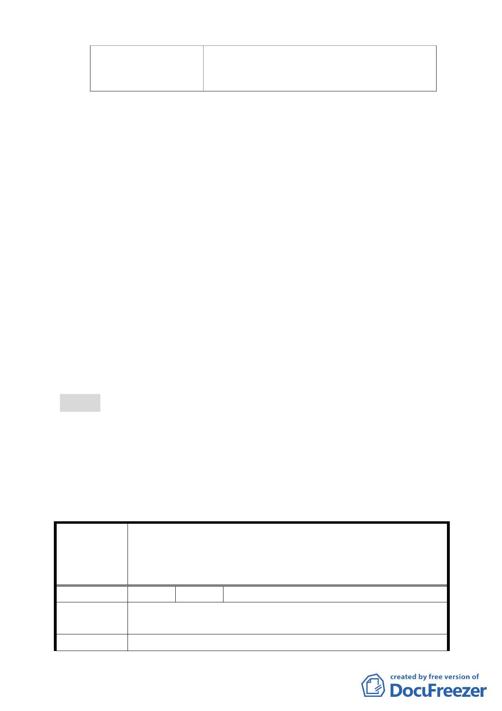

福華大飯店 A2
室內挑空開放空間、廣場式開放空間、地
面人行通道
（五）為預先防範各申請案件後續倘違規使用以住宅名義出
售，致損害善意第三人權益，請市府發展局及法規會研
提管理措施，提大會說明。
（六）請各申請單位依本次專案小組會議審查意見修正計畫
書、圖，送交市府發展局審閱後於本（6）月 14 日下班
前送達本會，俾儘速協助排入本會 6 月份委員會議進行
審議。
（七）因本次會議時間已晚，未及討論之「修訂臺北市『基隆
河（中山橋至成美橋段）附近地區土地使用分區與都市
設計管制要點』（北段地區）計畫案」，將另擇期召開會
議進行討論。
十五、99 年 6 月 17 日市府都市發展局以北市都規字第 09934446100
號函送修正後計畫書（如後附）到會，提請委員會續審。
十六、申請單位興富發建設股份有限公司 99.7.14 來函撤案。
決議：
一、本案依申請單位興富發建設股份有限公司 99.7.14 來函，同
意其撤銷申請。
二、公民或團體所提意見審決如後附綜理表。
臺北市都市計畫委員會公民或團體所提意見綜理表
修訂「臺北市基隆河（中山橋至成美橋段）附近地區
案
名
細部計畫娛樂區（供娛樂健身服務業使用）街廓編號
B10 基地（中山區金泰段 32-2 等 8 筆地號）土地使用
分區管制規定與都市設計管制要點」計畫案
編 號 1 陳情人 陳議員玉梅
目前大彎北段商業區之建物使用現況，大多違規作為住宅使
陳 情 理 由 用。
建 議 辦 法 為避免都市計畫變更公告實施後，造成未來有更大量之違規
- 27 -